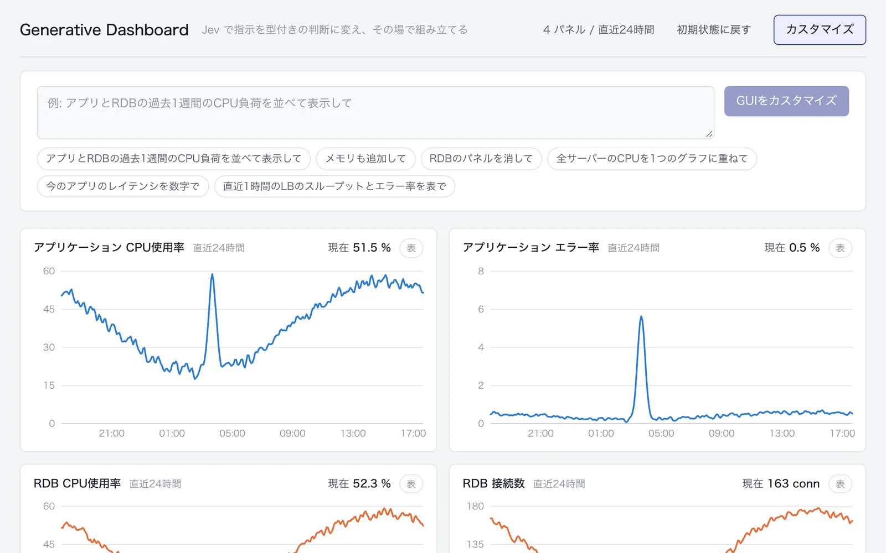

このUIがしていること
判断の結果は、ラベルや文章ではなく、画面の構成そのものとして返る。どのパネルを、どの期間で、グラフか表かで出すかが、指示によって変わる。
- 右上の「4 パネル / 直近24時間」が、いまの構成を短く言い表す。指示の後に何が変わったかを、数で確かめられる。
- 「初期状態に戻す」が常に出ている。組み直した結果が意図と違っても、1回の操作で戻れる。指示は入力欄に残り、書き直して送り直せる。
- 例文のボタンが、受け付けられる指示の範囲を示す。追加、削除、重ね合わせ、数字での表示、表での表示、と操作の種類が読み取れる。
- 各パネルの「表」の切り替えは、指示を使わずに直接操作できる。言葉での指示と、従来の操作が並んでいる。
- 受け付けられない指示や、曖昧な指示を送ったときの応答は、確かめていない。
キャプチャ
{kind=link}

（原寸の画像を開く）見る箇所見出し横の「Jev で指示を型付きの判断に変え、その場で組み立てる」、右上の「4 パネル / 直近24時間」と「初期状態に戻す」、指示の入力欄と「GUIをカスタマイズ」、例文のボタン、各パネル右上の「表」の切り替え
入力から画面の変化まで
-
判断への入力
入力欄に書く日本語の指示。例文として「アプリとRDBの過去1週間のCPU負荷を並べて表示して」「メモリも追加して」「RDBのパネルを消して」「全サーバーのCPUを1つのグラフに重ねて」などが並ぶ。
-
Jevの判断
画面の説明では、指示を「型付きの判断」に変える。どの質問で、何を選ばせているかは、取得した画面には出ていない。調査の記録では、判断の詳細を示す領域が、作者の記事で説明されている。
-
結果がUIをどう変えるか
初期状態は、アプリケーションのCPU使用率・エラー率、RDBのCPU使用率・接続数の4パネル。調査時の操作記録では、例文の指示でパネルが4枚から6枚に変わった。右上に、現在のパネル数と期間が出る。
- 判断型の見立て
- 不明出典から判断できない
- 画面は指示を「型付きの判断」に変えると述べるが、何を尋ねているかは取得した初期画面に出ていない。作者の解説記事は読んでいない。
Jevとの適合
指示を、決まった種類の操作と対象に対応づける判断は、自由な文章の生成を必要としない。候補が限られているため、結果は画面の構成として検証でき、戻すこともできる。画面の説明文も、指示を型付きの判断に変えることを主眼にしている。ただし、判断の設計は、このサイトの作業では確かめていない。
確認範囲と未確認事項
日本語の作者による投稿と公開サイトを確認。掲載した画面は公開サイトを開いた直後の状態で、指示を送る前のもの。指示でパネルが4枚から6枚に変わったという記述は、調査時の操作記録による。表示されるデータはデモ用で、実運用の監視システムではない。作者の解説記事はこの作業では読んでおらず、判断の詳細は確かめていない。
- 確認済み2026-09-21に取得した公開サイトの初期画面（4パネル、期間の表示、「初期状態に戻す」、指示の入力欄と「GUIをカスタマイズ」、例文のボタン、「表」の切り替え）
- 未検証指示を送った後の画面（4枚から6枚への変化は調査時の操作記録による）、Jevへの入力と出力、判断の詳細を示す領域、曖昧な指示や対応できない指示の扱い、作者の解説記事の内容、ソースコード
- 推定扱い質問型は不明として扱う。画面は「型付きの判断」と述べるが、何を尋ねているかは取得した画面に出ていない
- 引用公開サイト画面を2026-09-21に必要範囲で取得。権利は作者に帰属する